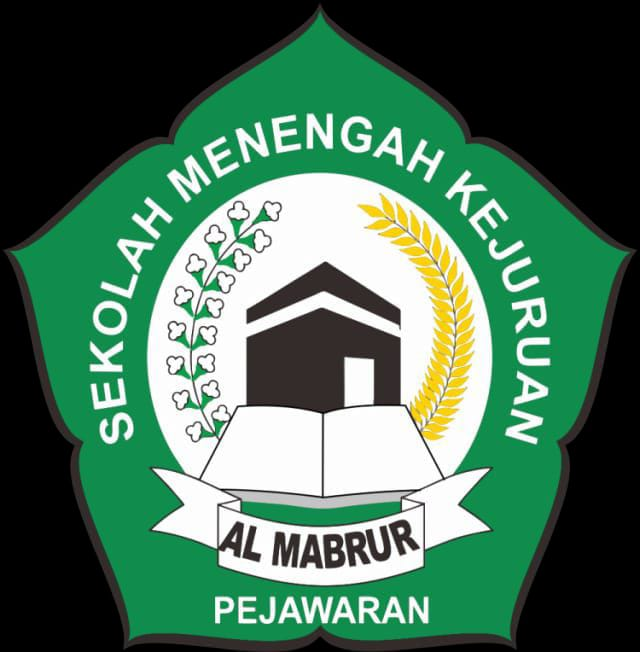

MAKALAH
KEBERSIHAN LINGKUNGAN

Di susun Oleh:
Nama:Zahra Yuliana
Kelas:XIC
Yayasan Persaudaraan Haji Al Mabrur
Tahun 2025/2026
KATA PENGANTAR
Segala puji dan syukur saya panjatkan kepada tuhan yang maha esa,karena ataskarena atas berkat dan limpahan rahmatnyalah maka saya bisa menyelesaikan malah dengan tepat waktu.
Berikut ini penulisan mempersembahkan sebuah makalah dengan judul "Kebersihan Lingkungan". Melalui kata pengantar ini penulis lebih dahulu meminta maaf dan memohon permakluman bila mna isi makalah ini ada kekurangan dan ada tulisan yang saya buat kurang tepat atau menyinggung perasaan pembaca.
Dengan ini saya mempersembahkan makalah ini dengan penuh rasa terima kasih dan semoga Allah SWT memberikan makalah ini sehingga dapat memberikan manfaat
DAFTAR ISI
HALAMAN JUDUL..................................................................i
KATA PENGANTAR................................................................ii
DAFTAR ISI...........................................................................iii
BAB I PENDAHULUAN............................................................1
A. Latar Belakang...................................................................1
B. Permusuhan Masalah.........................................................1
C. Tujuan Penelitian................................................................2
D. Metode Penelitian................................................................3
BAB II PEMBAHASAN............................................................3
A. Kebersihan Lingkungan.....................................................3
B. Kebersihan di lingkungan..................................................3
C. Manfaat Manjaga Kebersihan.............................................4
BAB III PENUTUP...................................................................4
A. Kesimpulan.....................................................................4
B. saran...............................................................................4
Daftar Pustaka......................................................................4
BAB I
PENDAHULUAN
A. Latar Belakang
sering kali kita mendengar slogan-slogan di berbagai tempat terutama di sekolah,yang isinya mengajak kita untuk menjaga kebersihan lingkungan
Akan tetapi slogan tadi tidak kita pedulikam, slogan tadi fungsinya hanya seperti hiasan belaka tanpa ada isinya, padahal isi dari sebuah slogan sangat penting bagi kita. Banyak slogan yang mengajak kita untuk menjaga kebersihan, tapi apa kenyataannya? Siswa masih membuang sampah sembarangan, selain ini siswa jugaa merobek-robek kertas dalam kelas dan bila memakai jajan. di tempat A bungkusnya juga di tempat A, padahal di tempat-tempat tersebut telah disediakan tempat sampah.
Tentu kita tidak mau sekolah kita menjadi kotor, kumuh dan penuh dengan sampah. Disamping itu sampah yang kita buang sembarangan tadi juga dapat mencemari lingkungan, baik di dalam kelas maupun di luar kelas dan juga menyebabkan suasana kelas kita tidak nyaman.
B. Perumusan Masalah
Berdasarkan latar belakang penelitian di atas penulis ingin mengemukakan permasalahan yang perlu penulis ketahui, bahwa mencegah dan mengatasi masalah yang ada itu juga harus di contohkan oleh guru nya sendiri dan di tindak bila ada siswa/i ya g melanggar. Tindakan-tindakan yang perlu di lakukan adalah sebagai berikut :
1. Guru selalu memberi contoh bila membuang sampah selalu di tempatnya.
2. Guru wajib menegur dan menasehati siswa yang membuang sampah sembarangan terutama pada saat siswa/i makan dan minum dalam kelas, bungkusnya di taruh dalam glodok bangku.
3. Mencatat siswa/i yang membuang sampah sembarangan pada buku saku/buku pelanggaran.
4. Membuat tata tertib baru yang isinya tentang pemberian denda terhadap siswa sebesar Rp 2.000 Setiap melanggar 1 tata tertib sekolah.
Dengan tindakan-tindakan ini maka kebersihan sekaligus kedisiplinan akan tercapai, terutama tindakan nomor 4 yang paling bagus, karena siswa mau melakukan pelanggaran ini tidak berani dan mau melakukan pelanggaran itu juga tidak berani.
C. Tujuan Penelitian
Tujuan penulisan ingin mengetahui apa yang tidak penulis ketahui dan apa yang penulis tidak mengerti diantaranya adalah :
1. Penelitian ingin tau lebih lanjut bagaimana perkembangan kebersihan di sekolah.
2. Penulis ingin tau bagaimana sikap siswa/i jika setelah ada saran-saran yang telah di rumuskan di atas.
3. Penulis juga menyukai kita semua bisa menjaga kebersihan kita akan terjauhi dari penyakit dan sekolah menjadi bersih.
D. Metode Penelitian
Dalam tugas bahasa Indonesia ini penulis menggunakan metode kepustakaan, mudah mudahan dengan metode ini penulis dapat menyelesaikan karya tulis ini dengan baik dan benar, penulis memohon maaf sebesar-besarnya bila dalam karyanya tulis ini banyak kesalahan.
BAB II
PEMBAHASAN
A. Kebersihan Lingkungan
sering kali melihat sampah berserakan di lingkungan sekolah. Padahal setiap kelas sudah disiapkan tempat sampah, apa kenyataannya? masih banyak siswa yang membuang sampah sembarangan.
Tindakan-tindakan yang perlu dilakukan adalah sebagai berikut :
1. Dimohon kesadaran dari siswa/i untuk membuang sampah pada tempatnya.
2. Menaati peraturan sekolah agar sekolah bersih.
3. Petugas piket harus membersihkan kelas dan lingkungan di luar sekolah.
4. Memberi sanksi tersedia bagi siswa/i yang membuang sampah sembarangan.
B. Kebersihan Di Lingkungan
Kebersihan adalah keadaan bebas di kotoran, termasuk di antaranya, debu, sampah, dan bau. Di zaman moderen. setelah Louis Pasteur menemukan proses penularan penyakit atau infeksi disebabkan oleh mikroba, kebersihan juga berarti bebas dari virus.
Kebersihan adalah selah satu tanda dari keadaan higiene yang baik. Manusia perlu menjaga kebersihan lingkungan dan kebersihan diri agar sehat, tidak bau, tidak mau, tidak menyebarkan kotoran, atau menularkan kuman penyakit bagi diri sendiri maupun orang lain.
Mencuci adalah salah satu cara menjaga kebersihan dengan memakai air dan sejenis sabun atau deterjen. Mencuci tangan dengan sabun atau menggunakan produk kebersihan tangan merupakan cara terbaik dalam mencegah penularan influenza dan batuk-batuk.
Kebersihan lingkungan adalah kebersihan tempat tinggal, tempat bekerja, dan berbagai sarana umum. Kebersihan tempat tinggal dilakukan dengan cara melap jendela dan perabotan rumah tangga, menyapu dan mengepel lantai, mencuci peralatan masak dan peralatan makan (misalnya dengan abu gosok).
C. Manfaat Menjaga Kebersihan
Kebersihan lingkungan merupakan keadaan bebas dari kotoran, termasuk di dalamnya, debu, sampah, dan bau. Di Indonesia, masalah kebersihan lingkungan selalu menjadi perdebatan dan masalah yang berkembang. Kasus-kasus yang menyangkut masalah kebersihan lingkungan setiap tahunya terus meningkat.
Problem tentang kebersihan lingkungan yang tidak kondusif dikarenakan masyarakat selalu tidak sadar akan hal kebersihan lingkungan. Tempat pembuangan kotoran tidak dipergunakan dan dirawat dengan baik. Akibatnya masalah diare, penyakit kulit, penyakit usus, penyakit pernafasan dan penyakit lain yang di sebabkan air dan udara sering menyerang golongan keluarga ekonomi lemah. Pengembangan kesehatan anak secara akan terhambat.
Tips dan Trik yang mudah, tepat dan efektif menyadarkan masyarakat Indonesia untuk selalu menjaga kebersihan lingkungan?
Berikut tips dan Trik menjaga kebersihan lingkungan :
1. Dimulai dari diri sendiri dengan cara memberikan contoh kepada masyarakat bagaimana menjaga kebersihan lingkungan.
2. Selalu Libatkan tokoh masyarakat yang berpengaruh untuk memberikan pengarahan kepada lingkungan pentingnya menjaga lingkungan.
3. Sertakan para pemuda untuk ikut aktif menjaga kebersihan lingkungan.
4. Perbanyak tempat sampah di sekitar lingkungan.
5. Pekerjaan petugas kebersihan lingkungan dengan memberi imbalan yang sesuai setiap bulanya.
6. Sosialisasi kepada masyarakat untuk terbiasa memilih sampah rumah tangga menjadi sampah organik dan non organik.
7. Pelajari teknologi pembuatan kompos dari sampah organik yang bisa di manfaatkan kembali untuk pupuk.
8. Kreatif, dengan mambhat souvenir atau kerajinan tangan dri sampah.
9. Atur jadwal untuk kegiatan kerja bakti membersihkan lingkungan.
BAB III
PENUTUP
A. Kesimpulan
Kesadaran individu begitu penting untuk menjalankan perubahan kebersihan pada lingkungan baik lingkungan alam maupun lingkungan sosial. Namun mayoritas para masyarakat masih baru berantusias dalam signifikan yang berada di satu aspek saja.
Dan para warga setuju dengan harus adanya cara-cara yang di lakukan dalam memberikan alternatif untuk lebih dapat menyadarkan masyarakat tentang nilai kebersihan.
B. Saran
Pengembangan ilmu pengetahuan, mambhat segalanya dapat menjadi riset mengenai kebersihan yang ada dan sebaiknya pemerintah memberikan masukan dan kebijakan yang tegas dan tepar untuk membuat perubahan-perubahan.
DAFTAR PUSTAKA
Bungin, Burhan. 2008... Metode Penelitian Kuantitatif .jakarta: Kencana. Effendi. Omong.U.2002. Dinamika komunikasi .Bandung: Remaja Rosdakarya. Jalaluddin.Rahmat.2001. Psikologi Komunikasi. Bandung: Remaja Rosdakarya. Jujun, Sumantri.2002. Filsafat ilmu .Jakarta: Sinar Harapan. nasution S.2003. Metode Research; Penelitian IImiah .Jakarta: Bumi Aksara. Sugiyono. 2003. Metode Penelitian Administras Bandung: Alfabet.